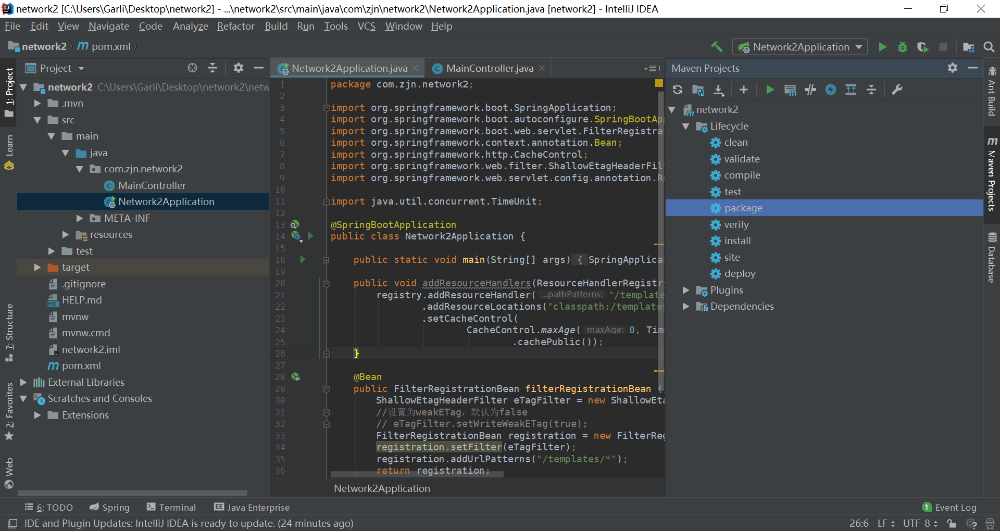
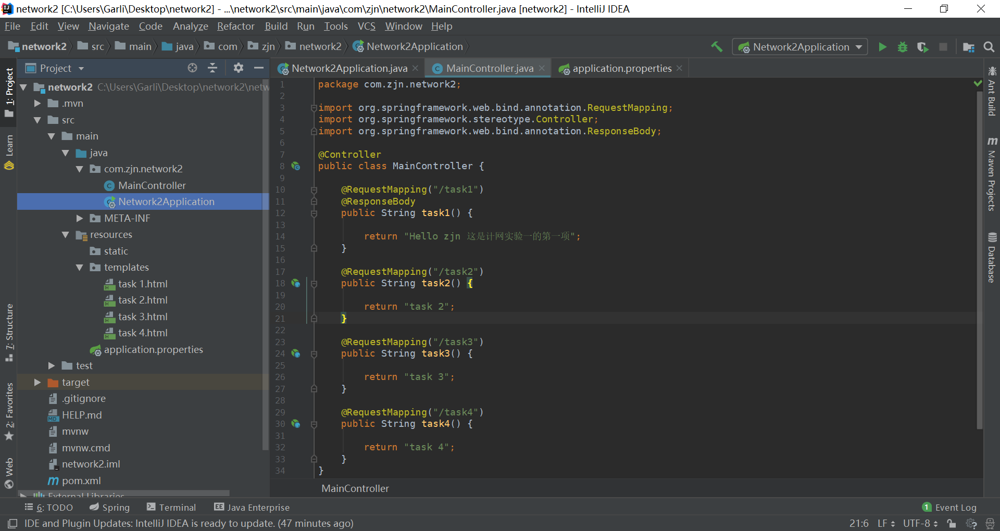

Spring boot的第一个简单应用
计网实验的时候需要自己写网页来抓包，我本来也想了解一下spring boot架构，之前用过beego，但时间有限，就直接抓起来弄，没有系统地去看，粗制滥造了一个，但是有些遇到的问题和感受还是想记录下来，之后去学这个框架的时候，也可回过头看看。
目前实现了几个页面，部署在服务器，没有用数据库，就是展示页面，然后设置了一些http缓存，安全验证的东西。
创建spring boot项目
直接上官网或者idea里弄，需要支持spring web和spring security，官网上弄得话，下载解压，用idea打开即可。没有配置maven的记得提前弄好。（补充这东西的作用，目前看可以方便写代码时的智能补充+package）
打开后可以先添加为maven project，会有诸多好处。如下图所示，点击+号添加这个项目的pom.xml后，再点击package运行：

（运行是点击Maven Projects框框里的小绿箭头噢）
这样一弄后有些东西用起来就舒服多啦，比如import不用去刻意写，可以直接点击错误的地方，看提示直接加进去就好，运行也不必输命令行：mvnw spring boot:run。之后肯定想测试一下，就打开上图的那个文件，这里有个main，是项目的入口，初始里面的内容和我们使用的spring security有关。
和这个含有main的文件同一路径下添加MainController.java文件（这个controller的含义可以具体去看看MVC模型是怎么回事儿的，这里不详细展开），然后将下面的内容复制进去。
1 | package com.zjn.network2;//这里根据你的名称改 |
之后直接去main那里运行，没有错误的话，到浏览器localhost:端口号/hello上打开，它会跳转到login界面，用户名可以随便一点，密码在你的终端运行内容有，复制登陆进去，就可以看到打印的hello world字符。这个端口号一般默认是8080，但我部署设置后在application.properties中改动为了8800，这个不担心，看看终端输出即可。
返回html页面
上面的hello例子，直接返回了字符串，但如果要返回html文档页面呢？我给出下面的例子：
1 | package com.zjn.network2; |
还是刚刚创建的MainController文件，不过现在换成上面的内容。task1返回的是字符串，而后面几个是返回的对于名字的html文档。区别在哪里呢？看上面@的内容你就明白了，现在就要去创建这几个html文档，在下面目录中创建：

并且在application.properties中写下面内容：
1 | # 定位模板的目录 |
至于html的内容可以直接输入，想好看一点可以markdown直接转html，再自由一点自己去写html和css这些样式吧（作为后端的确实还弄不来…..）。弄好后，老样子去运行试试吧。
http304缓存机制
https://www.jdon.com/50543这篇文章是我看到的最有用的一个，原文应该是搬运的英文的。但是在实现过程中还是做了一些修改。
文末提到的
addUrlPatterns("/*")最好在我们的main中修改一下，这个很巧是在做security中自带的。我的具体task 2代码如下：
1
2
3
4
5
6
7
8
9
10
11
12
13
14
15
16
ResponseEntity<String> task2(WebRequest request) {
ZonedDateTime expiresDate = ZonedDateTime.now().with(LocalTime.MAX);
String expires = expiresDate.format(DateTimeFormatter.RFC_1123_DATE_TIME);
String eTag = DigestUtils.md5DigestAsHex(expires.getBytes());
CacheControl cacheControl = CacheControl.maxAge(30, TimeUnit.MINUTES);
if (request.checkNotModified(eTag)) {
return null;
}
return ResponseEntity.ok()
.eTag(eTag)
.cacheControl(cacheControl)
.body("task 2");
}注意到其实我舍弃了传我的html文档，因为
ResponseEntity里面不是很好操作，一般需要和前端有一些交互才能做到。第二我要用LocalTime.MAX让我的时间是固定的，这样生成的etag才会一样，但其实这个值应该有真实含义，即最后一次修改时间，我这里只是达到一个出现304的需求，没有符合缓存设置的需求。其实这里看到了顺便去弄清ResponseBady和这个ResponseEntity用法区别，弄请http缓存设置是比较有益的。
部署到服务器
这一篇内容真的很详实了https://blog.csdn.net/Mou_Yang/article/details/102137861我就总结一下步骤，和说一点小坑。
- 去阿里云等地方弄一个服务器，再找个趁手的远程连接软件，我用的xshell，用阿里云自己的倒也可以
- 服务器拿到手，当然得配置一些东西，其实部署上去就是让远程的另一台电脑帮你跑程序，用那个电脑的ip去访问页面，就不用在localhost了，并且日夜不息……所以你本地怎么让项目运行起来，那你就得让远程的怎么运行，不过这远程的是Linux，你不能照你本地的OS那么整，所以这个的话，其实就配个jdk就好，能跑java就行，现在还不用数据库。里面注意一点，在设置jdk环境变量的时候我总是弄不对，java -version找不到，它会提示一个命令，我后来没办法去试了一下，jdk给安好了，环境变量也没问题了……所以人家官方的错误提示还是很有用的！（可能不适用于所有人的情况）
- 把项目打包成jar，在服务器上运行，运行结果和本机没啥区别，再在浏览器上访问，完事儿。当然想日夜不息，添点东西就好咯，我这个简单的就没必要了
后记
这个真的再简单不过，之前数据库要弄一个非常原始的java web项目都比这个要难一些，但也让我充分明白了框架真的好呀！（但全程自己写会加深对这个流程的理解），还有就是这个根本没有涉及到后端逻辑，最多熟悉一下spring boot使用哈哈哈。因为我是基本弄完以后才想着写这个，过程中的一些步骤错误可能会有点忘了，还有就是没有上几个对我帮助比较大的贴子（啊抱歉…他们还非常详细）下面的几点是我希望之后我来补充或者去学习的内容：
spring boot的常用几个依赖的介绍（等我用的时候）
怎么去更好使用spring security，比如不要随机密码，不是每个页面都拦截，login页面的优化….
spring boot加入后端逻辑
有些网上图片的地址插入进来，抓包后只显示一次抓图片的过程（这大概是计网的问题…
………….
github代码链接：https://github.com/Garlicisnotmyfavor/network1.git